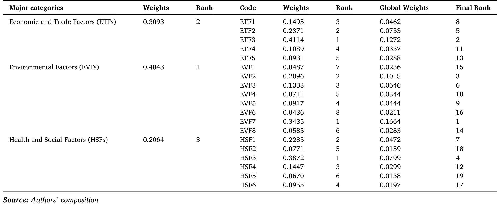
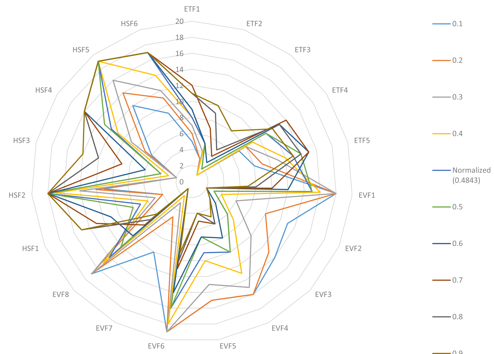

绿色航运走廊如何创造价值 | Transportation Research Part D
Garg, C. P., Kashav, V., & Lam, J. S. L. (2025). Evaluation of value creating factors in green shipping corridors. Transportation Research Part D: Transport and Environment, 145, 104790. https://doi.org/10.1016/j.trd.2025.104790
这项研究由印度管理学院罗塔克分校、UPES 德拉敦分校商学院和丹麦技术大学共同完成。文中作者按字母排序并声明三人贡献相等：署名在前的 Chandra Prakash Garg 来自印度管理学院罗塔克分校，Vishal Kashav 来自 UPES，Jasmine Siu Lee Lam 来自丹麦技术大学技术、管理与经济学系；Lam 同时是通讯作者。研究邀请 30 位来自不同国家、参与港口、航运及相关实践的专家，对绿色航运走廊的价值创造因素进行判断。
一条绿色航运走廊若只以替代燃料吨数或减排量来衡量，往往会漏掉项目为何能持续运作。Garg 等人提出，走廊价值同时落在环境、经济贸易、健康与社会三类因素上，并把它们细化为 19 项可比较的子因素。论文给出的不是某条航线的成本预测，也不是一份建设清单，而是一套用来排序“哪些目标值得优先投入”的专家判断框架。
结论先行
环境因素在三类目标中权重最高，归一化权重为 0.4843；经济贸易因素为 0.3093，健康与社会因素为 0.2064。放到全部 19 项子因素中，第一位是能源效率、能量回收与节约（全局权重 0.1664），第二位是吸引绿色投资（0.1272），第三位是改善空气质量（0.1015），第四位是周边社区福祉（0.0799）。这个顺序有一个清楚的含义：低碳走廊的价值并不来自单一设备或单一燃料，而来自能耗、资本与港口周边影响能否被放在同一张账上处理。
研究如何定义“价值”
论文把经济贸易因素定义为运行成本、国际合作与贸易关系、绿色投资、绿色客户吸引力和企业形象；环境因素覆盖替代燃料与推进系统、空气质量、海洋生态、水质、事故风险、能源效率以及绿色技术采纳；健康与社会因素则包括气候健康影响、生态旅游、社区福祉、利益相关方参与、透明报告和就业。这个分法有意把港口城市与沿线社区纳入走廊的受益者，而不是把它们视为审批过程中的外部约束。
它回答的是“在专家看来，这些目标的相对优先级如何”，而不是“提高某个分数会带来多少吨减排或多少财务回报”。因此，排序适合用来确定早期议程和跨主体讨论的重点；船型选择、燃料价格、基础设施容量和融资条款仍需要以具体航线的数据单独测算。
图 1｜从因素清单到权重：方法并不产生因果结论

图 1把研究过程拆成两步。第一步通过文献与专家意见确定三类因素和 19 个子因素；第二步采用模糊 SWARA（Stepwise Weight Assessment Ratio Analysis）把专家给出的语言判断转换为权重。专家先比较相邻准则的重要性，再据此逐步计算权重，研究者随后回访专家确认排序结果。
这张图的价值在于说明结果的证据类型：它是一项结构化的主观判断聚合，而不是对真实项目绩效的回归估计。30 位专家的行业知识能让工程、金融和社会目标进入同一个框架，却不能证明“绿色投资”会因某项政策自动流入，也不能证明某个港口提高能效后必然改善社区福祉。读者应将后面的数值理解为优先级信号，而不是因果系数。
表 8｜优先级排序把能源、资本与社区放在同一张账上

表 8先给出三类因素的整体排序，再将类别权重与子因素权重相乘，得到全局权重。环境因素排第一，并不意味着经济或社会因素可以被忽略。恰恰相反，第二位的绿色投资说明资本进入仍是走廊从试点走向长期运营的前提；第四位的周边社区福祉说明港口城市承受的空气、噪声、土地与就业影响，已经进入专家对“价值”的定义。若没有项目许可、社会接受度和收益分配，技术路线即使可用，也可能无法形成连续的走廊服务。
排在首位的能源效率、能量回收与节约，权重为 0.1664。它覆盖的并不只是船上节油，也涉及船舶设计、航速与航线安排、靠港与装卸衔接，以及整个物流系统的能耗。空气质量改善以 0.1015 位列第三，指向硫氧化物、氮氧化物和颗粒物暴露等港口城市问题。表中的排序因此不应被压缩为“先买绿色燃料”，而应转化为一组可核算的运营指标：每航次能源需求、岸基能源来源、局地污染物、资本成本与社区可见收益都需要有明确口径。
图 2｜排序会变：高优先级不等于一成不变

图 2对应论文的敏感性分析。作者把环境因素的类别权重由 0.1 逐步调整至 0.9，并重新查看 19 项子因素的名次。环境权重较低时，吸引绿色投资排在第一；当环境因素达到研究给出的基准权重 0.4843 后，能源效率、能量回收与节约保持第一。空气质量改善在环境权重提高后稳定处于前列，而透明报告在这些设定下始终位于末位。
这并不是“透明报告不重要”的结论。敏感性分析仅测试了一个类别权重变化时的相对排序，不能测量透明度、认证或公众沟通对融资和许可的实际作用。图 2更值得用于讨论优先序的条件性：当项目仍在寻找资本和货主承诺时，融资吸引力可能压过技术效率；当减排和环境约束成为更强的共同目标时，能效会成为最直接的价值驱动。对实际走廊，权重应由本地货源、港口电力、公共健康、监管目标和参与方共同复核，而不宜照搬一次专家调查的数字。
启示
对走廊发起方，论文最有用的地方是把“是否值得建设”改写成一组必须被共同管理的价值问题。首先，能源效率应当成为项目的起点，而不能留在项目竣工后的节能宣传里。船东、港口和货主可以围绕航速、靠港等待、岸电使用、装卸节奏、燃料储运损耗与货物装载率建立共同的基线。这样做的意义在于，效率收益能在替代燃料大规模可得之前就降低能耗和成本，也为后续生命周期核算提供可比较的运营数据。
其次，绿色投资排在第二位提醒我们，资金安排不能只覆盖码头设备或一批新船。投资者需要看到稳定的燃料需求、清楚的环境属性、可执行的客户承诺和跨港口的服务连续性。港口若单独建设加注设施而没有长期需求协议，船东即使有低碳船舶也可能缺少可靠的补给；货主若只在营销中提出减排目标而不承担一定的绿色运价，项目同样难以形成现金流。因而，走廊治理应把燃料采购、船队更新、港口接入与货主承诺放入同一套商业安排，并公开谁承担前期风险、谁获得环境收益、何时可以重新谈判。
最后，社区福祉位列第四，要求项目方把港口周边影响从“合规附件”变成可交付成果。空气质量、噪声、就业机会、土地占用和交通组织会直接影响当地对新燃料储运、岸电扩容和码头改造的接受程度。可行的做法不是泛泛地承诺利益相关方参与，而是提前发布可核验的基线与年度结果，将污染物、就业培训、投诉处理、公众沟通和收益分配写入项目指标。这样的安排不保证项目一定获批，却能让技术路线、融资方案和社会许可在同一时间表内接受检验。
局限性
这项研究的基础是 30 位国际专家的模糊 SWARA 判断。它适合在信息不足、目标彼此难以直接比较的早期阶段建立优先级，却不能替代实测数据或项目财务模型。专家样本的职业构成、地域经验、对燃料和法规的预期都会影响权重；不同航线面对的货类、船龄、港口腹地、电网碳强度与燃料供给结构不同，排序完全可能变化。论文也没有报告“提高一单位能效”会减少多少成本或污染物，因此不应把全局权重当作投资回报率或减排弹性。
敏感性分析增加了结果的可读性，但它只改变环境因素的类别权重，并没有同时扰动燃料价格、资本成本、法规约束、需求波动或基础设施容量。绿色投资在环境权重较低时排第一，反映的是该情景下的相对次序，不是融资因素在所有市场中必然占优。透明报告在图中居后，也不能被解读为可有可无，因为认证、信息披露和公众信任可能通过融资条件、货主选择或许可程序间接影响项目成败，而这些机制不在该模型的识别范围内。
把这套框架用于一条具体走廊时，最合理的下一步不是直接套用排名，而是重新组织覆盖船东、港口、燃料供应商、货主、监管方和周边社区的本地专家，再将判断与船舶能耗、靠港记录、燃料合同、配电接入、空气质量和就业数据并列。随后应至少做两类检验：一是用不同参与方和不同时间点重复赋权，观察排序是否稳定；二是用实际项目的成本、排放与社会结果回看哪些优先项真正兑现。这样，论文提供的价值框架才能从一份专家排序转化为可用于设计、融资和监管的决策材料。